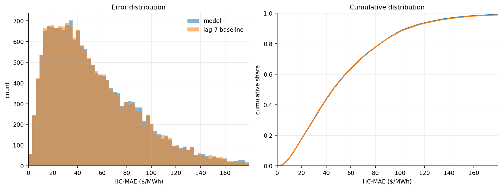
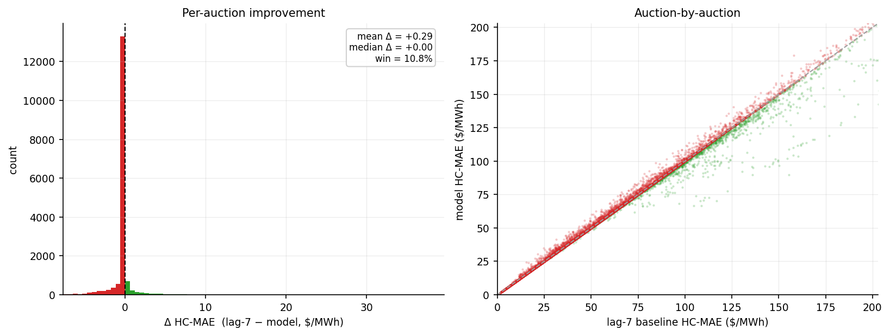
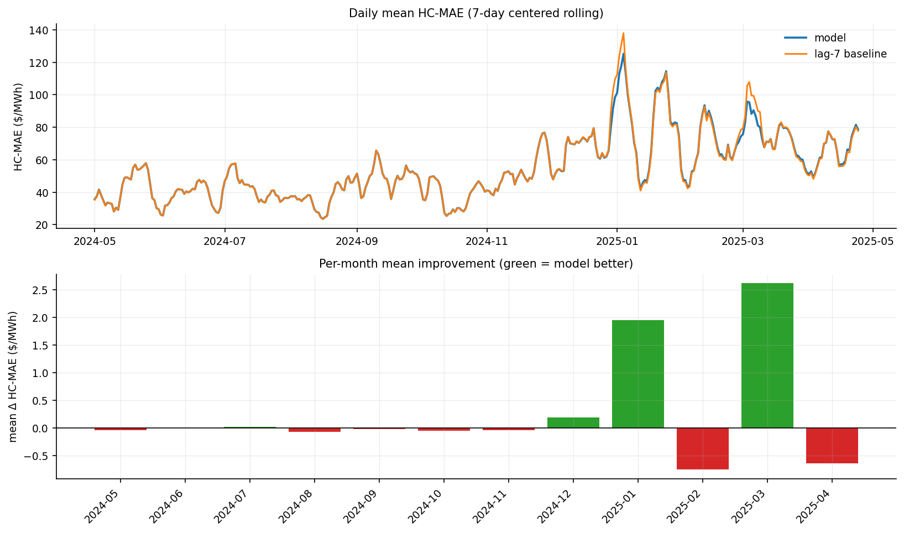
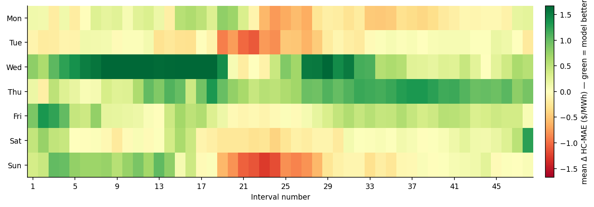
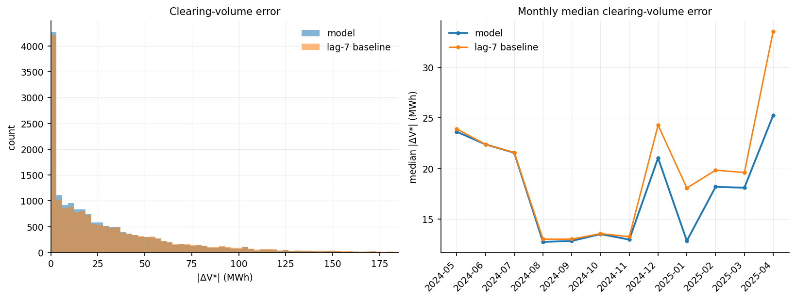
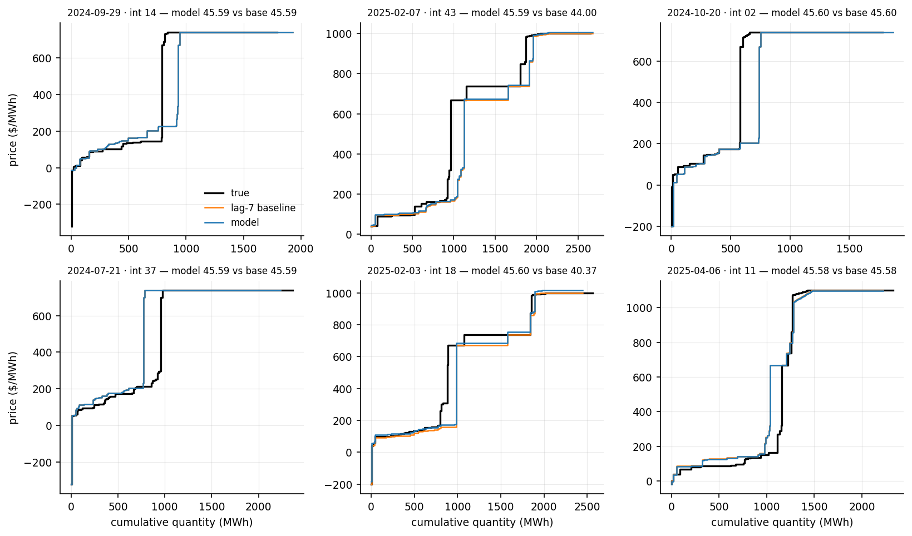
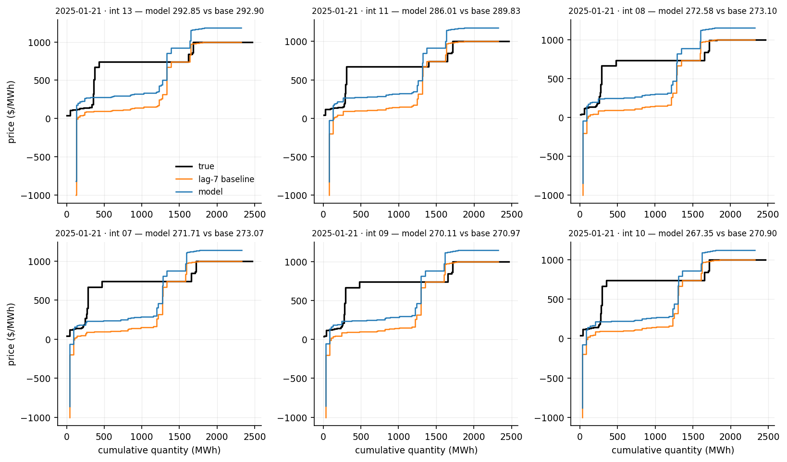

This row reads the true curve, so it is not a forecast. It measures how much a single price shift of the lag-7 curve can do.
It adds one amount to every price of the lag-7 curve, so the whole curve moves up or down without changing its shape. The amount is the median price difference between the true curve and the lag-7 curve, both read at the 64 positions of the interp embedding, which are 64 shares of the curve's own total volume evenly spaced from 2% to 98%.
7-day-ahead · test 2024-05-01 → 2025-04-24 · 17,232 auctions · reference: lag-7 baseline
| This model | lag-7 baseline | |
|---|---|---|
| Mean HC-MAE ($/MWh) | 54.55 | 54.83 |
| Median HC-MAE ($/MWh) | 45.59 | 45.35 |
| Win % vs lag-7 | 10.8% | - |
| Mean |ΔV*| (MWh) | 29.31 | 33.66 |
| Median |ΔV*| (MWh) | 17.34 | 18.75 |
| Mean |ΔP*| ($/MWh) | 29.62 | 31.48 |
| Median |ΔP*| ($/MWh) | 1.60 | 2.06 |




The true demand curve is crossed with the predicted supply curve, and the error is how far this moves the clearing point (V*, P*).
| This model | lag-7 baseline | |
|---|---|---|
| Mean |ΔV*| (MWh) | 29.31 | 33.66 |
| Median |ΔV*| (MWh) | 17.34 | 18.75 |
| Win % on |ΔV*| | 12.1% | - |
| Mean |ΔP*| ($/MWh) | 29.62 | 31.48 |
| Median |ΔP*| ($/MWh) | 1.60 | 2.06 |
A few price-floor auctions make the mean of |ΔP*| large, so the median is the summary.


